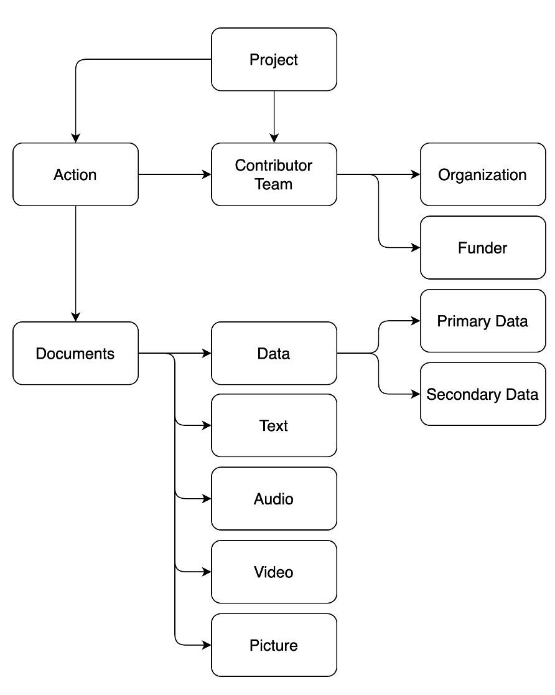
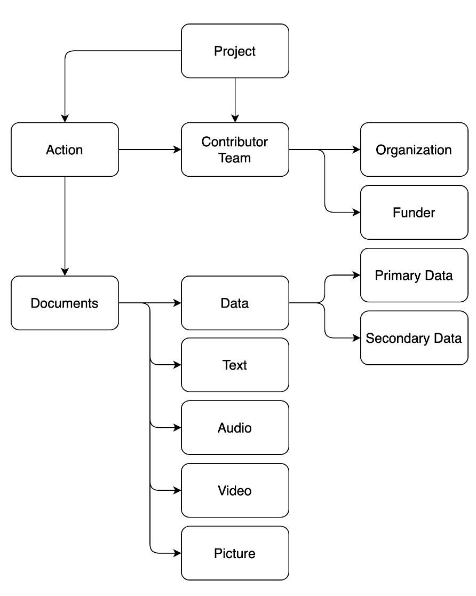

knitr::include_graphics("pics/metadata.jpg")
Metadata is data or information about a resource. Here, we use the term resource to denote anything you want to share with the larger community. Most obvious resources from scientific projects include datasets from which analyses and research reports are derived. However, there are many types of resources that can be shared from a project. For example, we have identified some of the following resources (not an exhaustive list):
Additionally, metadata can be provided about the global project, the people involved in that project, and how the project was completed:
The purpose of metadata within the scientific community is multi-fold and often described with the acronym FAIR (Wilkinson et al., 2016):
Learn more about FAIR principles here: https://www.go-fair.org/fair-principles/
Metadata can be time consuming, confusing, and hard to make. So, why should you create metadata that makes your work FAIR?
Metadata can fall into two categories:
In STAPLE, we allow you to create metadata through simple HTML forms that conforms to either our proposed minimum standard or your own uploaded standard. If you have never worked with metadata or created it before, you can use our templates to understand what needs to be provided and when. If your research field has existing standards, you can use STAPLE to ensure you include the required information.
We will describe our minimum metadata standards below and provide examples JSON or JSON-LD format. JSON is one of most popular machine readable formats because it is “lightweight” as a simple text file of key-value pairs. It resembles a dictionary where each entry has a name and a description.
For example, here’s how you might format author information:
{
"author":[
{"firstName":"Erin", "lastName":"Buchanan"},
{"firstName":"Marton", "lastName":"Kovacs"},
{"firstName":"Engerst", "lastName":"Yedra"}
]
}The author metadata includes three entries, which have more metadata: first and last names. Generally, metadata is hierarchical or nested to show the relationship between items (i.e., authors have first and last names). We will create output from STAPLE in JSON-Linked Data (JSON-LD) format which was created by the Resource Descriptive Framework (RDF Core Working Group, 2004). The LD formatting adds special pieces of information @context and @type - denoting the specific metadata style you are using and typology of the information you are sharing. This standardization of metadata allows for indexing in databases and search engines (especially https://datasetsearch.research.google.com/).
Here’s an example of the English Lexicon Project (Balota et al., 2007):
{
"@context": ["https://schema.org/"],
"@type": ["Dataset"],
"name": ["The English Lexicon Project"],
"fileFormat": [".csv"],
"contentUrl": ["https://elexicon.wustl.edu/index.html"]
}STAPLE generally uses schema.org naming conventions for our minimum metadata standards. Schema.org is a collaborative working group that has provided a standardization for metadata vocabulary. For example, the author of this documentation may be formatted as:
{
"author":[
{
"@type":["Person"],
"identifier":["https://orcid.org/0000-0002-9689-4189"],
"givenName":["Erin"],
"familyName":["Buchanan"],
"email":["ebuchanan@harrisburgu.edu"],
"affiliation":["Harrisburg University of Science and Technology"]
}
]
}Many communities use Schema.org and extend their formats for their own individual needs. See for example:
The advantage to using Schema.org is it’s popularity - many people use it and computers know how to read it. Further, it is considered semantic which details the connections between items (https://en.wikipedia.org/wiki/Semantic_Web).
Below, we explore the types of metadata that are available in STAPLE and their minimum requirements. Each of these requirements can be extended (see building your own metadata [LINK]), developed from scratch, or other community requirements can be imported into STAPLE (see converting metadata into STAPLE format [LINK]).
You can view our JSON validation schema by examining each file LINK. JSON validation schema are used to create the forms you see in the app and to ensure that the output files are formatted correctly.
You can view our JSON-LD examples of the output from each schema LINK. These files would be downloaded from STAPLE to share in a repository like GitHub or the Open Science Framework.
The image below shows how each type of metadata collected within STAPLE for our minimum standard is related to each other. Each piece is described below with the required components. Within the descriptions below, we denote the official keyword for a object and then the description of what that keyword indicates. These are taken from Schema.org. In the app, they are given more descriptive titles/names to know what to enter in the form.
For example:
identifier –> “Funding number or other identifier:”addressLocality –> “City name of the Organization’s Location:”knitr::include_graphics("pics/metadata.jpg")
Projects are separate research endeavors that you want to create information for and track using STAPLE’s features. Projects can be as simple as a manuscript/report/document you want to share, grant applications, data collection, stimuli and translations, etc. Generally, we think of projects as work that will eventually be published, but this is not a necessary requirement.
Required elements of project-level metadata (you enter this information):
name: Name of the projectdescription: Project descriptionkeywords: Keywordscitation: Citation (should probably break this down into parts)Suggested elements of project-level metadata (you enter this information):
abstract: Abstract of the project, generally from the paper or more formal than the required descriptionidentifier: Persistent identifier (DOI, ISSN, etc.)publisher: Publisher (should this be under citation)Other elements of project-level metadata (that are added automatically):
Action describes all of the tasks completed within STAPLE. This metadata is collected for you by using the app. The following information is collected:
startTime: The date-time of when the action was assigned if it was a taskendTime: The date-time of when the action was completedagent: The person who assigned the taskparticipant: The person who completed the taskresult:
name: The name of the taskdescription: The description of the tasksubjectOf: The project title from staple, linked to the project metadataData gets a special type of schema, etc.
https://schema.org/Dataset
Note that data can be text, but this is the spot we classify other objects you may output.
https://schema.org/TextObject
https://schema.org/AudioObject
https://schema.org/VideoObject
https://schema.org/ImageObject
json format
metadata builder?